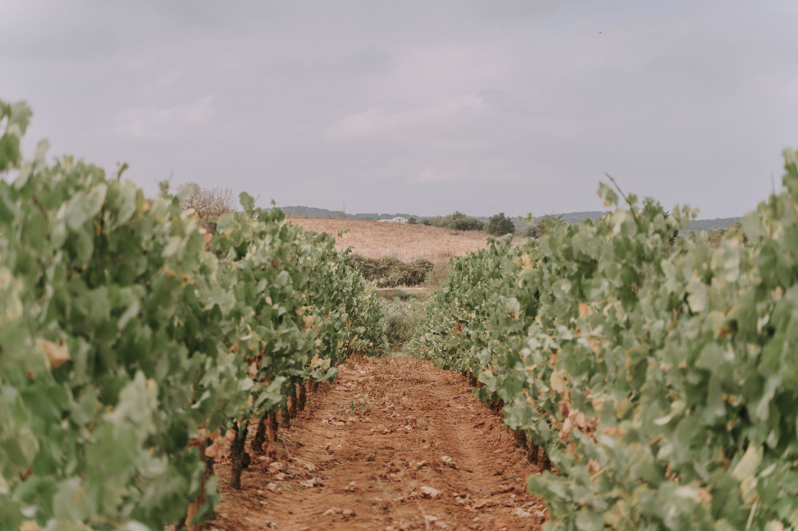
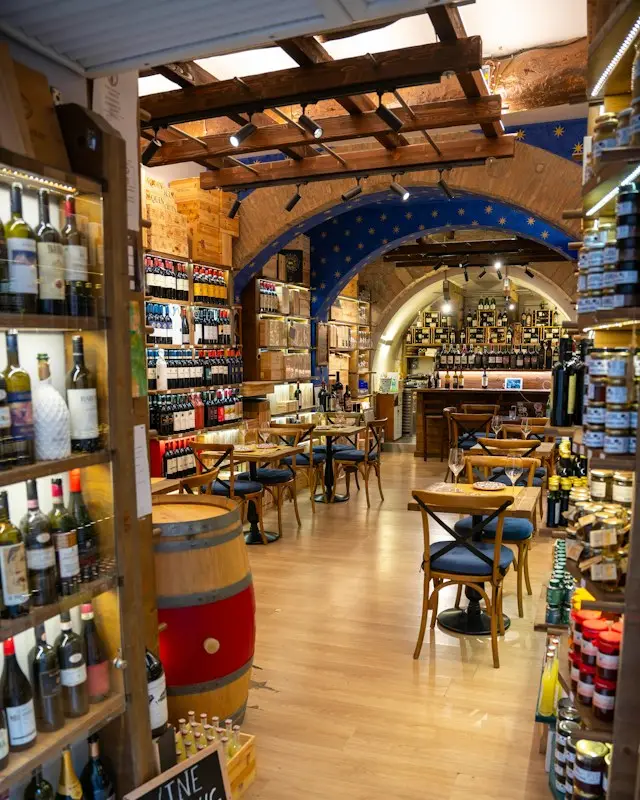
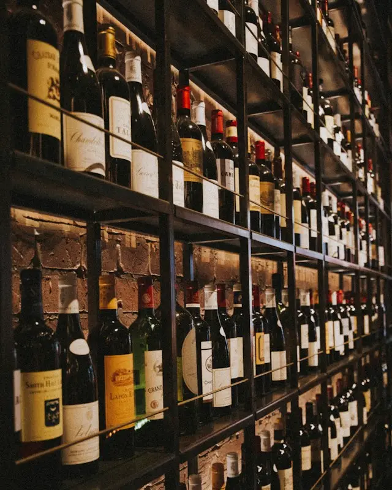
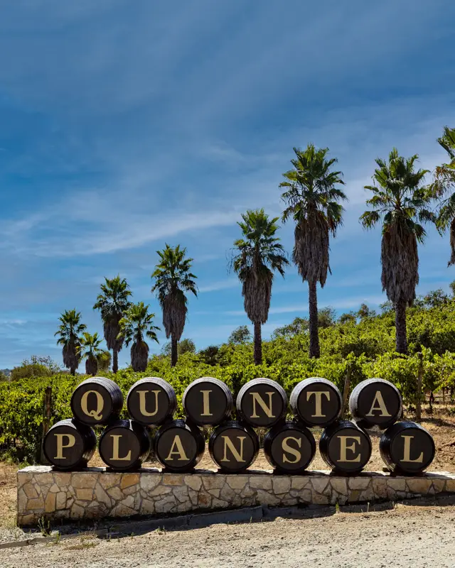
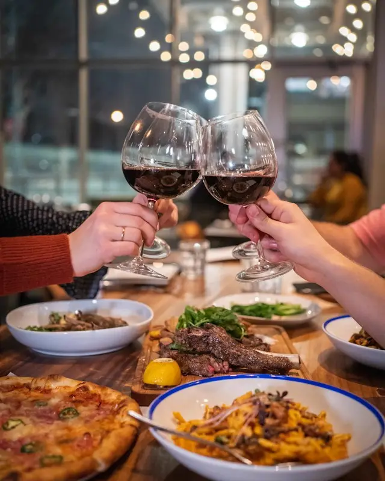

Quinta da Plansel · Alentejo
Vinho. Videiras. Saber.
Há 50 anos nas mãos da família, da videira ao copo.

 Os nossos produtos
Os nossos produtos

Tudo da Plansel num relance
O que encontra na Plansel.
Do vinho no copo à videira no solo: uma empresa familiar que acompanha produtores há 50 anos.
- 01Eventos de vinhoEventos em Portugal e no estrangeiro, novos todas as semanas.
- 02Comprar vinho Plansel onlineTinto, branco e rosé do Alentejo, diretamente da quinta.
- 03Parceiros, rede & provasLoja online para B2B e B2C, parceiros na Alemanha e na Suíça, provas com restaurantes, hotéis e em feiras.
- 04Academia: Finalmente perceber o vinhoCursos WSET segundo o padrão de Londres, reconhecidos internacionalmente, em português e inglês.
- 05Ficar & celebrar na QuintaAlojamento, lugar para autocaravanas e espaços para casamentos, empresas e festas, com ou sem pessoal.
- 06Engarrafamento & consultoriaPequenos produtores engarrafam connosco e recebem apoio de três enólogos, com know-how alemão e internacional.
- 07Máquina de vindimar com operadorColheita mecânica de uva e azeitona: disponibilizamos máquinas com operador experiente.
- 08Comprar videiras certificadasVideiras e clones certificados dos Viveiros Plansel.
- 09Escritório em outsourcing: TI, marketing, IA e serviçosContabilidade, Instagram e site com loja para pequenos produtores. E ainda Plansel Technology: aplicações de IA e formação para gestores.
 Eventos01
Eventos01
Eventos de vinho em Portugal: o que acontece esta semana.
Festas do vinho, provas, feiras e sugestões de restaurantes. Atualizado todas as quintas-feiras, com ligação direta ao organizador.
Portugal
- 25 nov. 2026 · PortoProva e Jantar Vínico Quinta do VesúvioJantar vínico · Matriarca · 19:00
- 25–26 nov. 2026 · LisboaWelcome Drink Quinta do NovalProva · Garrafeira Nacional · 16:00–20:00
- 26 nov. 2026 · LisboaPrats & Symington: ChryseiaSugestão · Prova · Imperial Botânico · 19:00
- 26 nov. 2026 · SantarémProva Comentada com Tiago CabaçoProva · Arinto & Touriga · 18:30
- 26 nov. 2026 · LisboaJantar Vínico Quinta da VineadouroJantar vínico · Olissippo Lapa Palace · 19:30
- 26–28 nov. 2026 · FunchalEssência do Vinho MadeiraProva · Pestana Casino Park
- 26–29 nov. 2026 · EstremozCozinha dos GanhõesFestival gastronómico · Parque de Feiras
- 26/27 nov. 2026 · Praia da BarraProva de Vinhos Fundação ADFPProva · Binho Wine Bar · 18:00–20:30 · confirmar a data
- 27 nov. 2026 · OlhãoBonjardim Boutique WinesProva · República 14 · 16:00–20:00
- 27 nov. 2026 · PortoMenin Douro EstatesMasterclass · Garrafeira Nacional, Rua das Flores · 18:30
- 27 nov. 2026 · AzeitãoJosé Maria da Fonseca: Cave da BassaqueiraJantar vínico · Cave da Bassaqueira · 19:00
- 27 nov.–1 dez. 2026 · PortelFeira do MontadoSugestão · Cortiça
- 28 nov. 2026 · LisboaProvar é Saber: Enchidos e PresuntoProva · Sala Ogival, ViniPortugal · 10:00–13:00
- 28 nov. 2026 · LisboaEnóphilo por um DiaProva · Lagar de São Vicente · 14:00–19:00
- 28 nov. 2026 · ViseuWines & SpiritsProva · Pousada de Viseu · 14:30–20:30
- 28 nov. 2026 · MadalenaEnologia no Pico: vinhos brancosPalestra · Pico, Açores
- 28 nov. 2026 · Vidigueira4 EstaçõesJantar vínico · Quinta do Paral · 19:30
- 28 nov. 2026 · Vila de FradesVoz, Vinho e HistóriasMúsica · Taberna dos Arcos · 21:30
- 28–29 nov. 2026 · PortoVinhos no Mercado: Especial de NatalProva · Mercado Ferreira Borges
- 28 nov.–1 dez. 2026 · LisboaLisboa Wines FestivalFesta do vinho · Time Out Market
- 4–6 dez. 2026 · Vila de FradesVITIFRADESSugestão · Festa do vinho
- 4–6 dez. 2026 · MelgaçoFesta do Espumante de MelgaçoFesta do vinho
- 5 dez. 2026 · MadalenaEnologia no Pico: vinhos licorososPalestra · Pico, Açores
- 5–6 dez. 2026 · LisboaFesta do Vinho Independente: Xmas EditionFesta do vinho · Praça Beato · 11:00–17:00
- 12 dez. 2026 · MadalenaEnologia no Pico: vinhos tintosPalestra · Pico, Açores
- 19 dez. 2026 · LisboaProvar é Saber: AçordasProva · Sala Ogival, ViniPortugal · 10:00–13:00
- 19 dez. 2026 · LisboaFeira de Natal Garrafeira ImperialProva · Imperial Botânico · 16:00–20:00
- 16 jan. 2027 · VidigueiraGala Cidade Europeia do Vinho 2026Gala
- 29/30 jan. 2027 · LisboaProvar é Saber: Carne de PorcoProva · Sala Ogival, ViniPortugal · 10:00–13:00 · confirmar a data
- 5 fev. 2027 · PortoOs Melhores do Ano 2026Gala · Alfândega do Porto
- 14–21 fev. 2027 · PortoWine & Travel WeekFeira
- 15–17 fev. 2027 · LisboaLisbon Food AffairFeira · FIL
- 18–21 fev. 2027 · PortoEssência do VinhoProva · Palácio da Bolsa
- fim de fev. 2027 · PortoSimplesmente VinhoProva
- 3–7 mar. 2027 · LisboaBTL Better Tourism LisbonFeira · FIL
- 5–7 abr. 2027 · LisboaSAGALEXPOFeira · FIL
- 21–25 abr. 2027 · BejaOvibejaFeira
- 30 abr.–2 mai. 2027 · MelgaçoFesta do Alvarinho e do FumeiroFesta do vinho · Complexo Desportivo Melsport
- 29 mai. 2027 · Quinta da PlanselPlansel Rosé Party
- 2–3 jul. 2027 · LamegoDouro & Porto Wine FestivalFesta do vinho
- 13–19 jul. 2027 · Ponte de LimaFesta do Vinho VerdeFesta do vinho
- 22 ago.–12 set. 2027 · FunchalFesta do Vinho da MadeiraFesta do vinho · Madeira
- 26 ago.–12 set. 2027 · MadeiraMadeira Wine LoungeFesta do vinho
- 4, 5, 11, 12 set. 2027 · MadeiraConcertos nas VinhasMúsica
- 11 set. 2027 · Estreito de Câmara de LobosVindima ao VivoVindima · Madeira
- meados de set. 2027 · Peso da RéguaFesta das Vindimas do DouroFesta do vinho
Internacional
- fev. 2027 · ParisWine Paris
- mar. 2027 · DüsseldorfProWein
- abr. 2027 · VeronaVinitaly
- primavera 2027 · Neustadt/WeinstrasseMundus Vini
- mai. 2027 · LondresLondon Wine Fair
Restaurantes
- ÉvoraRestaurante Fialho
- Vila Nova de MilfontesTasca do Celso
- LisboaTaberna da Rua das Flores
- PortoProva
- Montemor-o-NovoWine & Dine na Quinta da Plansel
Copos e cortiça
- Vila Nova de GaiaThe Bridge Collection, WOW
- São Brás de AlportelVisita a uma fábrica de cortiça
Datas sem garantia. Confirme junto do organizador antes da viagem.
Sugerir um evento
Publicidade · billboard 970 × 250 · via symplr
 Vinhos02
Vinhos02
Quinta da Plansel · Vinhos
Vinho português de gama alta. Rastreável até à videira.
Dorina, enóloga formada em Geisenheim, faz vinho a partir das videiras do pai desde 1993. Sabemos de que clone vem cada garrafa.


Recomendação IA
Plansel Tinta Barroca
A Tinta Barroca traz fruta escura e taninos macios. Acompanha bem carne e molhos intensos.
Porquê: Encorpado + carne → tinto estruturado
Encomendar na loja
Premiados no Mundus Vini
Provados às cegas. Premiados.
Apresentamos regularmente os nossos vinhos ao Mundus Vini, o concurso internacional da editora Meininger. Um júri internacional prova às cegas, sem rótulo e sem nome. Cada medalha é, por isso, um selo de qualidade independente para os vinhos Plansel.
 Quinta da Plansel 25 Anos (1997–2022)Edição única
Quinta da Plansel 25 Anos (1997–2022)Edição única- DL Dorina Lindemann Tinto Reserva 20212024
- Plansel Grande Escolha 20192024
 Júlia Lindemann Limited Edition 20192024
Júlia Lindemann Limited Edition 20192024- 6× ouro e 5× prata2023
- Plansel Selecta Reserva Branco 20142015

Christoph & Andrea MeiningerDireção · Editora Meininger
Mundus Vini na Meininger Os vinhos Plansel Notícia da Quinta
Dorina e Luísa são também provadoras oficiais do Mundus Vini.
 Parceiros, rede & provas03
Parceiros, rede & provas03
Parceiros, rede & provas
Assim a Plansel chega até si.
Diretamente da nossa loja online, através dos nossos parceiros na Alemanha e na Suíça, ou no copo: em provas, roadshows e feiras.
Para quem trabalhamos
 01RestauraçãoRestaurantes, wine bars, bares de hotel, beach clubs e cateringPedir informações
01RestauraçãoRestaurantes, wine bars, bares de hotel, beach clubs e cateringPedir informações 02HotéisCarta de vinhos, bar, presente de boas-vindas e loja do hotelPedir informações
02HotéisCarta de vinhos, bar, presente de boas-vindas e loja do hotelPedir informações
03Comércio de vinhoVinotecas, garrafeiras, mercearias finas, lojas online e duty-freePedir informações
04Grossistas e exportaçãoDistribuidores, armazéns para a restauração, importadores e marcas própriasPedir informações
05EnoturismoOperadores turísticos, passeios no Alentejo e excursões de cruzeirosPedir informações 06Empresas e presentesPresentes para clientes, receções e garrafas com rótulo próprioPedir informações
06Empresas e presentesPresentes para clientes, receções e garrafas com rótulo próprioPedir informações- 07Casamentos e eventosNoivos, organizadores, quintas, feiras e festivaisPedir informações

08Clientes particularesNa loja e online, do pack de prova à garrafa magnumIr para a loja
Loja online: para clientes empresariais e particulares

B2B
Para revendedores, restauração e grandes compradores
Encomende 24 horas por dia através do acesso B2B na loja Plansel, aos seus preços previamente acordados. Logo após a encomenda recebe a confirmação por e-mail e pode verificar novamente quantidades, preços e produtos. A sua encomenda entra de imediato no nosso sistema de gestão.

B2C
Para particulares
Escolha os seus vinhos na loja e receba-os comodamente em casa, diretamente da quinta no Alentejo.
Os nossos parceiros comerciais
- AlemanhaOrbis ViniImportador com armazém próprio para os vinhos Plansel · contacto: Kaiorbis-vini.de
- BavieraWolfgang BicheleParceiro de vendas para a Baviera
- ColóniaGarrafeira da família WittlingTem Plansel e apresenta novos vinhos e colheitas em eventos próprios
- SuíçaParceiro em breveO contacto será indicado aqui em breve
- PortugalQuinta da PlanselDiretamente da quinta em Montemor-o-Novo
Quer representar a Plansel no seu país ou região? Ser parceiro
Provas, roadshows e feiras
Parceiros estratégicos: restaurantes & hotéis
Há anos que organizamos com restaurantes e hotéis roadshows, provas e apresentações de novos vinhos. Os nossos parceiros ganham uma experiência especial para os seus clientes e um bom motivo para os convidar para o próximo evento.
Planear um evento juntosProvas com Dorina & Luísa
Disponível mediante honorários: vamos ao seu evento, hotel ou feira, na Europa e no mundo, também como prova-espetáculo. Ambas são provadoras oficiais do Mundus Vini.
Pedir uma provaNas feiras
A Plansel está presente em feiras profissionais, na ProWein em Düsseldorf com stand próprio. Visite-nos e prove as novas colheitas.
Marcar reunião na feiraRede: Universidade de Évora · INIAV · WSET London · Meininger Verlag
 Academia04
Academia04

Plansel International Wine School
Finalmente perceber o vinho
Cursos oficiais WSET segundo o padrão de Londres, com a formadora WSET Wilmy Matton, a enóloga Dorina Lindemann e professores convidados. Entre viveiro, laboratório e adega.
- WSET Level 1 · WinesIntrodução para restauração e apreciadores1 dia
- WSET Level 2 · WinesCastas e regiões do mundo3 dias
- WSET Level 3 · WinesPara futuros escanções5 dias
- Masterclass PortugalClones, terroir, adega. Com o Arquivo Böhm2 dias
info@planselwineschool.com · +351 266 898 921
 Alojamento & festas05
Alojamento & festas05
Enoturismo · Quinta da Plansel
Experiências de topo, a uma hora de Lisboa.
Provas na adega, Wine & Dine entre as vinhas, alojamento na Quinta e a Plansel Gin Experience.


 Engarrafamento & consultoria06
Engarrafamento & consultoria06
Engarrafamento & consultoria
Engarrafar e receber consultoria, na Quinta da Plansel.
Pequenos produtores engarrafam connosco e recebem apoio de três enólogos, com know-how alemão e internacional.
 Máquina de vindimar07
Máquina de vindimar07
Máquina de vindimar com operador
Máquina de vindimar com condutor, para uva e azeitona.
Colheita mecânica de uva e azeitona: disponibilizamos máquinas com operador experiente.
 Videiras08
Videiras08
Viveiros Plansel
Videiras certificadas do nosso próprio viveiro.
Desde 1981 que os Viveiros Plansel enxertam videiras e clones de castas portuguesas. Cerca de metade das videiras certificadas de Portugal vem de clones Plansel.
 Escritório em outsourcing09
Escritório em outsourcing09

Plansel Technology
Levamos os produtores de vinho para a era da IA.
A IA está a mudar vendas, marketing e gestão mais depressa do que um pequeno produtor consegue acompanhar. Usamos as ferramentas da Anthropic, Google Gemini e OpenAI por si e mostramos como funcionam.
A prova está à sua frente: Este site usa IA. O sommelier recomenda vinhos, o Arquivo Böhm responde a perguntas técnicas e todos os textos existem em sete línguas.
Pedir consultoriaFormação em IA à medida
Para gestores e equipas, à medida da sua empresa: trabalhamos com os seus vinhos, clientes e processos. Em português, inglês ou alemão, na Quinta ou nas suas instalações.
- Escrever prompts que funcionam mesmo
- Assistentes de IA próprios para vendas e escritório
- Proteção de dados e uso seguro da IA
Aplicações de IA para a sua adega
- Sommelier IA que aconselha cada cliente da loja
- E-mails e newsletters personalizados para cada cliente
- Agente de IA responde a pedidos e reservas 24 horas por dia
- Descrições de vinhos, rótulos e site automaticamente em 7 línguas
- Publicações e reels no Instagram a partir das suas fotos, com textos por IA
- Previsões de vendas e stock a partir dos seus dados
- Faturas e recibos lidos, verificados e pré-lançados
Outsourcing
Você faz o vinho, nós tratamos do resto: site com loja, redes sociais, contabilidade. Um só contacto, um preço mensal fixo.
 Ciência10
Ciência10
Plansel Science · O Arquivo Böhm
A ciência por trás de cada garrafa.
Plansel significa «Plantas Seleccionadas». Por trás do nome está um programa de investigação que trabalha com universidades e prepara as castas portuguesas para o clima de amanhã.


«Portugal precisa da sua própria investigação, para não ficar dependente de castas que não se adaptam ao seu solo e clima.»
Comendador Jorge (Hans Jörg) Böhm, nascido em 1938 em Neustadt an der Weinstraße, vem de uma família alemã de comerciantes de vinho. Em 1961 o seu veleiro encalhou perto de Cascais, e apaixonou-se por Portugal. Já em 1969 a empresa familiar, sob a sua direção, era o maior importador de vinhos portugueses na Alemanha.
Depois de estudar melhoramento de videiras em Geisenheim, fundou a Viveiros Plansel em 1981 e iniciou a primeira seleção clonal sistemática de castas portuguesas, com a Universidade de Évora e o atual INIAV. Mais de 30 projetos de investigação depois, os clones Plansel são reconhecidos na Califórnia, Nova Zelândia e Austrália, e grande parte das vinhas de Portugal assenta em videiras Plansel, comercializadas pela Viveiros Plansel e pela Vinverus.
Em 2006 o Presidente da República Portuguesa nomeou-o Comendador de Mérito Agrícola.
 Prémio OIV 2010
Prémio OIV 2010
A obra de referência · Chaves Ferreira, 2007
O Grande Livro das Castas
O grande livro das castas de Portugal. Coordenado pelo Comendador Jorge Böhm e premiado pela Organização Internacional da Vinha e do Vinho (OIV). Descreve as castas autóctones do país, das quais nascem também os vinhos Plansel.
PT · OriginalDisponível
DE · ENTradução IA, pré-encomenda
FR · ES2027
中文 · PL2027
-
 Novo · 2026Livro Branco das Castas VitícolasNovas castas resistentes a fungos: como Portugal pode usar menos fitofármacos.
Novo · 2026Livro Branco das Castas VitícolasNovas castas resistentes a fungos: como Portugal pode usar menos fitofármacos. -
 InglêsThe Portuguese Vineyard and Wine BookHistória, castas, terroir, regiões vinícolas e gastronomia.
InglêsThe Portuguese Vineyard and Wine BookHistória, castas, terroir, regiões vinícolas e gastronomia. -
 Dinalivro · 2010D. João, Marquês de Montemor-o-NovoA história por trás da nossa linha de vinhos Marquês de Montemor.
Dinalivro · 2010D. João, Marquês de Montemor-o-NovoA história por trás da nossa linha de vinhos Marquês de Montemor.
2006Comendador de Mérito Agrícola, nomeado pelo Presidente da República
2008Melhor técnico de viticultura, Revista de Vinhos
2 × OIVPrémios literários da Organização Internacional da Vinha e do Vinho
2013Placa de honra da Universidade de Évora
2014Medalha de honra da Academia das Ciências de Lisboa
Seleção clonal
Das vinhas velhas escolhem-se e multiplicam-se as cepas mais sãs e expressivas.
Castas resistentes
Videiras que precisam de menos fitofármacos. Böhm considera esta a tarefa mais importante do setor.
Alterações climáticas
Material vegetal para verões mais quentes e menos água, testado no Alentejo.
Castas antigas
Castas portuguesas quase esquecidas são redescobertas e testadas em vinho.
Comprar videiras e clones na Viveiros Plansel
Pergunte ao Arquivo Böhm
Protótipo IAUma IA treinada com 50 anos de investigação Plansel responde a perguntas técnicas na sua língua e indica a fonte no livro. Escolha uma pergunta de exemplo:
Um clone é a descendência de uma única cepa, particularmente boa. Todas as plantas de um clone são geneticamente iguais. A Plansel procura essas cepas em vinhas velhas, avalia-as durante anos quanto à sanidade, produção e qualidade do vinho, e multiplica apenas as melhores.Fonte: Livro Branco das Castas Vitícolas, cap. Seleção clonal (referência de exemplo)
 Wine Letter11
Wine Letter11
The Plansel Wine Letter · todas as quintas-feiras
Cinco minutos que alargam o seu conhecimento de vinho.
Gratuito, na sua língua. Com conteúdos da Wine School e do Arquivo Böhm.
- 01Eventos de vinho no mundo nos próximos 30 dias
- 02Agenda do vinho em Portugal
- 03Uma quinta da semana
- 04Restaurantes com boa carta de vinhos e Plansel
- 05Hotéis em Portugal onde pode beber Plansel
- 06Uma lição da Wine School
 Família12
Família12
A família Böhm-Lindemann
Uma família que vive do vinho há gerações.
Um percalço no mar tornou-se a obra de uma vida: três gerações fizeram da vinha, da investigação e da adega a Quinta da Plansel.
-
Jorge BöhmFundador, melhorador de videiras, Comendador
-
 DorinaEnóloga e alma da quinta
DorinaEnóloga e alma da quinta
-
 JúliaMarketing, redes sociais e finanças
JúliaMarketing, redes sociais e finanças
-
 LuísaEnologia e vendas internacionais
LuísaEnologia e vendas internacionais
- Séc. XVIII
A família Böhm dedica-se ao comércio de vinho e torna-se um dos principais importadores de vinho da Alemanha.
- 1961
O veleiro de Jorge Böhm naufraga no porto de Cascais. Fica, conhece o país e vê o potencial das castas alentejanas.
- 1975
Compra os primeiros terrenos perto de Montemor-o-Novo. Daí nasce o viveiro Viveiros Plansel.
- Anos 90
A filha Dorina, enóloga formada em Geisenheim, vem para Portugal com o marido Thomas Lindemann.
- 1993
Com Paulo Laureano nasce o primeiro vinho na Adega Experimental da Universidade de Évora. O nome: Plansel, de «Plantas Seleccionadas».
- 1998
Em cinco anos, Dorina e Thomas construíram a sua própria adega: a Quinta da Plansel.
- Hoje
As filhas Júlia e Luísa participam na gestão. A Quinta produz 400.000 litros por ano, em cinco gamas de vinho.
- 1975Primeiras vinhas em Montemor-o-Novo
- ~50 %das videiras certificadas de Portugal vêm de clones Plansel*
- 50+anos de seleção clonal de castas portuguesas
- 400.000 lde vinho por ano da Quinta da Plansel
- WSETInternational Wine School na quinta
* Dado da empresa Plansel, citado pela Vinetur, 9 nov. 2026
Fonte: Quinta da Plansel, «A história Lindemann-Böhm» e «A nossa equipa».
Família Böhm: árvore genealógica, Hans Jörg e Dorina Desde 1975: o viveiro Viveiros Plansel